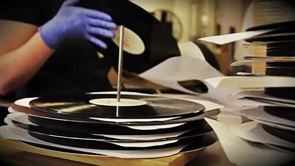
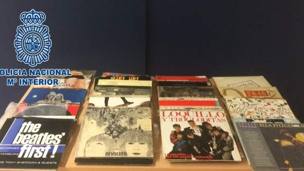

Last News
AMazon is holding a contest to give away LP records to celebrate the relaunch of its vinyl record store.
But the forecasts can be adverse: the company only 
will give away a vinyl record per day, for 13 days.
The store began its contest on October 23, so there are few days left for the draw.
On their fifth day, customers can participate in the contest to win a copy of the Rolling Stones album, "Sticky Fingers", 1971.
The store not only sells vinyl. Amazon also sells CDs and digital music, of course. Many of the CD purchases come with AutoRip,
which means that the buyer's digital library will be updated with the music purchased.
One of the largest music companies in the world is becoming retro.
Sony Music Entertainment said last week that it will start producing vinyl again, after almost 3 decades of having suspended its production.
The measure was taken by a dramatic increase in the demand for vinyl music in recent years, according to a Sony spokeswoman.
The interest comes from the youngest clients who never used these types of recordings before, as well as from the oldest clients.
Sony - whose artists include Adele, Beyoncé and Daft Punk - finished its vinyl production in 1989 after the CD monopolized the market.

But despite the current popularity of digital music services like Spotify, old school recordings are enjoying a revival.
The consulting firm Deloitte forecasts that the vinyl music industry will generate double-digit growth in 2017 for the seventh consecutive year,
selling 40 million records and generating about 900 million dollars in profits.
The vinyl could represent up to 18% of all physical music revenues this year, which could represent some $ 5 billion, Deloitte said in a recent report.
Turntables and accessories related to vinyl are also benefiting as a result.
Sony and Panasonic introduced new player models last year to earn money. Sony said it will revive vinyl production for March of the other year in a
factory southwest of Tokyo that will be managed by one of its subsidiaries. It has not yet decided what genres of music it will produce, according to the spokeswoman.
The firm installed an analog cutting recording machine in February, which makes master copies of discs for mass production and is now presenting a printing machine, he added.
National Police agents have arrested a man who responds to the initials of J.H.M., 44 years old and
with numerous police records, as alleged perpetrator of a crime of robbery with force inside a vehicle after subtracting
allegedly 3,000 euros on vinyl records inside tourism.

According to the agents, J.H.M. also stole other valuables for an amount
over 400 euros; while trying to sell vinyl records at a store selling second-hand items,
where they already knew that they were stolen objects.
The arrest came after a woman reported that when she returned to her vehicle, she was stationed on a street in Arrecife,
I had found the glass of one of the fractured windows and the interior of it was missing two suitcases with lots of vinyl records,
as well as other valuables worth more than 3,400 euros, as reported by the National Police in a press release.
Based on this information, the agents were able to know how a few days later a man tried to sell the music records of a store
of sale of second-hand items. However, the person in charge of commerce, who already knew that they were stolen objects,
He brought the facts to the attention of the National Police, which arrested the seller as the alleged perpetrator of a crime of robbery with force.
Finally, the corresponding police report was instructed and sent to the competent Judicial Authority.